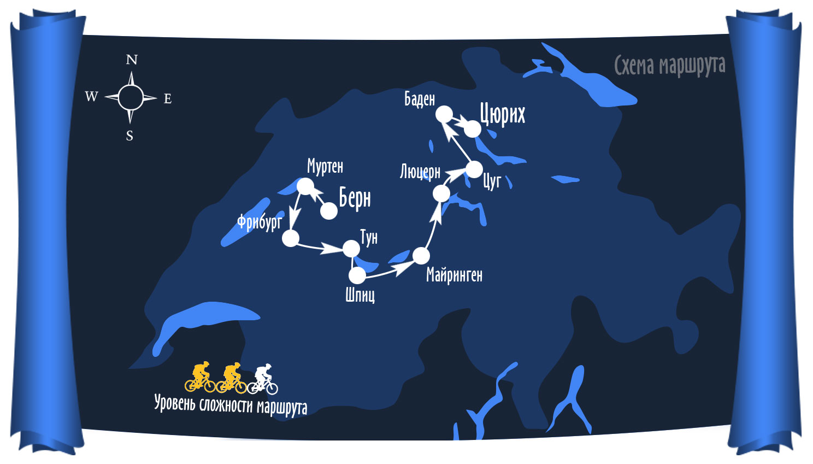

Этот маршрут можно озаглавить так: «увидеть Швейцарию и не умереть». Ведь всем известно, что в Швейцарии есть горы. Мы помним, как пастор Шлаг, отправляясь в Берн на Блюменштрассе, шел по снегу на лыжах. И дело было в горах. Да, горы в Швейцарии есть, но наш маршрут построен так, что мы едем не по горам. Приглашаем в маршрут, главная цель которого знакомство с культурным наследием и красивой природой Швейцарии. Конечно, в любом случае, Швейцария – не Голландия, и подъемы – спуски тут обязательно будут! Но, тем не менее, маршрут вполне по силам обычному человеку, совсем не спортсмену.
Швейцария - удивительная страна. Она состоит из кантонов, в котором живут совершенно разные люди. В свое время они объединились для самозащиты. Но сами оставались независимыми. Мы посетим и французскую часть, где отведаем фондю, и немецкую. Увидим водопад, в водах которого Конан Дойль топил Шерлока Холмса. Посмотрим фахрверковые дома и могучие замки, и, конечно, очаровательные города на озерах. И все это в непосредственной близи от настоящих швейцарских гор. Они совсем рядом. Из другиз "брендов" Швейцарии, отметим сыр и шоколад. Мы побываем и на шоколадной фабрике, разумеется с дегустацией, и на сыроварне.
В этот день мы прилетаем на землю Швейцарии в Цюрих и переезжаем в небольшой столичный городок Берн. Да, это не опечатка. Берн - небольшой город. В Швейцарии есть намного больше. Поэтому, нам, велосипедистам, в нем комфортно. Да и местные жители ведут себя без особого пафоса. Одно из развлечений горожан - сплав по реке, которая описывает по городу большую петлю. Удобно: от места финиша до места старта пройти довольно близко. А река несет вас через пол города. Течение приличное. Вечером соберем и опробуем велосипеды, посидим в местном ресторане. Можно отдыхать. "Ужасы велотуризма" начнутся только завтра.

Первая на нашем пути достопримечательность – городок Муртен. Это город сказка. Окруженный хорошо сохранившейся стеной он стоит на невысоком холме, возвышающемся над озером. За стеной - улицы, образованные старинными домами. Кругом море цветов. Чистота такая, что после Швейцарии, кажется, что в Германии бардак.
Из Муртена мы поедем по интересной тихой дорожке, которая приведет нас к двум интересным достопримечательностям. Первая, это скальный монастырь. Да, в скалах пробиты окна, кельи. Монахи тут больше не живут. Это, может быть, и к лучшему. Мы можем зайти, посмотреть. Вторая достопримечательность - велодорожка идет под железнодорожным мостом. Вернее, прямо в его теле. Мост перекинут через глубокое ущелье. До реки, которая несет свои зеленые воды в сторону Муртена, метров 50. Очень красиво.
Наконец, нас встречает Фрибург. Это большая достопримечательность. Центр Фрибурга полагается одним из самых сохранившихся средневекоых центров в Европе. К тому же, город располагается на больших холмах, которые придают городу особое очарование.

В этот день мы вновь вернемся в немецкую часть страны. Вдобавок, увидим первое по настоящему швейцарское озеро. Какая тут вода. Слов нет. Вода такая, что рыбы, которые ходят стайками, хорошо видны. Если будет хорошее настроение, можно будет посидеть в кафе в городке Тун, в месте, где река Ааре вытекает из озера Тун. Так вот, там есть такие кафе, что вы сидите за столиком на набережной, а мимо вас плавают рыбы. Ничего не скажешь, красиво. Да и сам город под стать. Центр его находится на острове, куда ведут старинные мосты. Рядом замок.
На ночлег останавливаемся в городке Спиц. Он зажат между озером и горами. Конечно, не без замка, старинных домиков. Но главное, пожалуй, виды на озеро.

Едем вдоль озер. Одно озеро сменяется другим. Даже города по пути попадаются с говорящими названиями: Интерлакен. То есть, город между озер. Так и есть. Затем мы приедем в очень интересное место. А именно, городок Майринген. Собственно, городок сам не интересен. Интересны окрестности. Во-первых, водопад. Тот самый, Рейхенбахский. Хотя, честно говоря, даже не знаю. Может быть этот замечательный водопад, все-таки, во-вторых. Ибо есть на свете Аарешлюхт (господи, какой все-таки мелодичный немецкий язык!), место, где река Ааре пробивает горную гряду, образуя узкое ущелье. Вода с шумом течет в скалистых берегах, высотой многие десятки метров. Вдоль воды сделана дорожка, и это чудо природы можно осмотреть. В самом высоком месте, скалы возвышаются над водой на 180 метров! А самое узкое место в каньоне - 1 метр.

Как ни прекрасно на брегах озера Бриенц, пока и честь знать. Едем на другое озеро. Вернее, в этот день мы побываем на берегах сразу трех озер, и одно будет красивее другого. Правда мы познакомимся и с такой особенностью рельефа, как "подъем". Да, не все озера разделены плоской перемычкой. Итак, из Майрингена мы поедем вверх, и доберемся до берега озера Сарнен. Дальше, поедем вниз к озеру Альпачер, ти финишируем на берегах одного из красивейших озер, на котором расположен град Люцерн. Тоже, вероятно, самый красивый город Швейцарии.

В этот день мы отправимся на север по живописным берегам реки Реус. Конечно, не весь путь пройдет по берегам реки. Мы увидим другую Швейцарию, где много полей, деревенек, а вместо озер течет река. Что ж, река, так река. Вечером приедем в город с термальными источниками. Чтобы лучше прочувствовать тепло земли, было бы неплохо помокнуть в этот день под дождем. Этого мы обещать не можем, а вот источники у нас будут.

В этот день у нас будет великолепный финал. Мы увидим самый мощный в Европе водопад. Это Рейнский водпад. Слышали про реку Рейн? Это могучая река, которая течет через всю Европу, с Альп в море. И в городе Шаффхаузен эта река падает с уступа вниз. Рейн! Шириной он в этом месте порядка 200 метров. Посреди стоит скала. Падающий Рейн обтекает ее с двух сторон. Каждый поток, как довольно крупная река. Наш велопоход завершен. Велосипед собираем в чехол. В Цюрих отправимся поездом.

Конечно, несколько часов для Цюриха мало. Город с очень богатой историей, интересной архитектурой. Вы можете задержаться в нем на денек-другой. А если дела не позволяют остаться, то в этот день будет организован трансфер в аэропорт.
Да, интересно бы знать, сколько стоит участие в таком мероприятии? Стоимость маршрута можно уточнить на странице Календарь. Там же можно оставить заявку.
{/block}